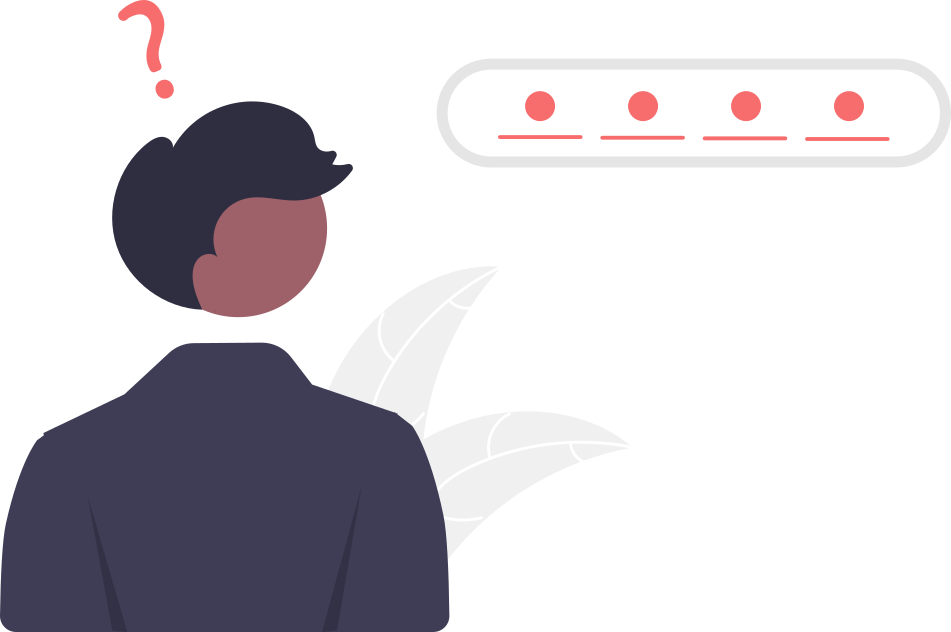
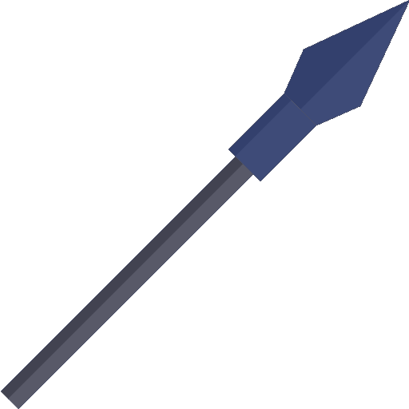

In 1969 one of the first computer networks created by as a military project by the Pentagon, named ARPANET (Advanced Research Projects Agency network) was created. Roughly 15 years later the internet was born, it was a result of ARPANET using TCP/IP (transmission control protocol/internet protocol) to connect networks all around the world to create one internet. In 1987 the world was introduced to a the first virus program that stole data from infected computers. In the same year was the introduction of the first antivirus program, paving the way for future cybersecurity programs. In 1999 the internet was introduced to one of the first phishing attacks that was distributed via email, “Melissa” by David Smith. The Melissa virus sent the first 50 people of contact list of Microsoft Outlook while opening various pornogrpahy websites (read more about the Melissa virus). A few years after the Melissa virus and the ILOVEYOU virus the US Government recognized cybersecurity and the necessity to prevent it, creating the National Cyber Security Division within the Homeland Security department. Today, cybersecurity remains a crucial issue as 16.4 billion devices are internet connected as of 2021, making personal and sensitive data unsafe.
Centuries ago, passwords were used in a simple verbal manner to gain access to different areas, however, the modern-day definition of a password has altered significantly. In 1961, Fernando Corbató, an American computer scientist studying at MIT at the time, introduced the concept of the Compatible Time-Sharing System, a moment that essentially created cybersecurity. During the 1970s, Robert Morris utilized the Unix operating system to store passwords.

Phishing is the use of fraudulent emails in an effort to gain sensitive information such as social security numbers, passwords, and more. There are several different types of phishing used.

Spear phishing is when emails are sent to specific people or organizations, contrary to regular phishing where emails are sent at random. Attackers attempt to gain classified information of these organizations, in an effort to hurt their repuation, harm the public or users, and more.
Vishing is when victims receive phone calls or voice messages from attackers regarding a problem with an account, often an Amazon or bank account, in an effort to gain the account information from you.
Smishing is similar to vishing but via text messages instead of phone calls.
Contrary to spear fishing, vishing and smishing can occur regardless of the identity of the person, making them extremely common
Whaling is when attackers send emails, acting like senior officials in a company, to try to gain confidential information regarding a company. This could be information such as passwords that allow attackers to gain access to more sensitive information, such as social security numbers, house addresses, and bank accounts, from which attackers can create more damage.

Dictionary attacks use words found in English dictionaries to try and brute-force passwords. For example, the password “raven” can easily be brute-forced using this method. This is why users must have complicated passwords (see the securing a password section) that cannot be guessed easily through dictionary attacks.
Rainbow table attacks use tables of hashes of common passwords to compare hashed passwords with the ones in the table. If there’s a match, then the password stored in the table is the same as the desired password.